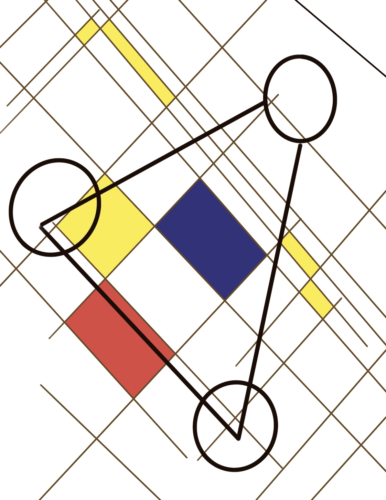
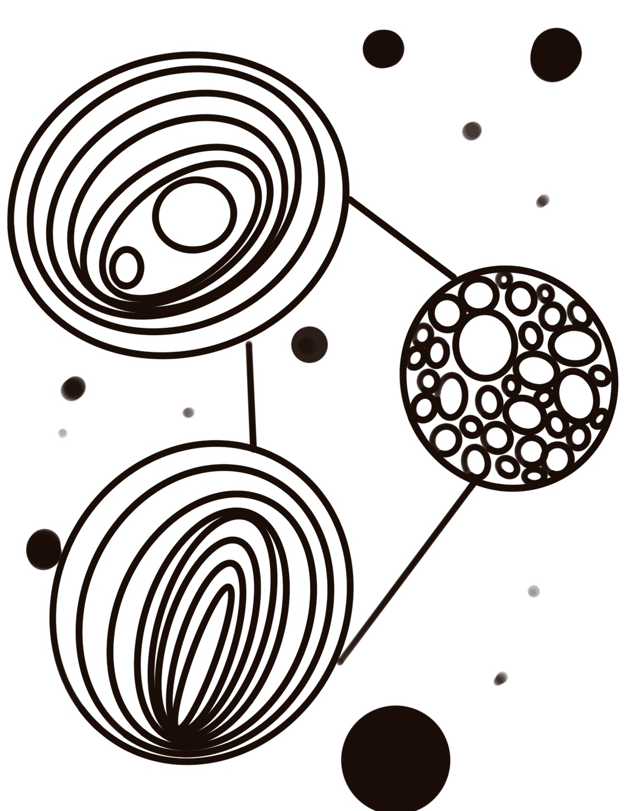
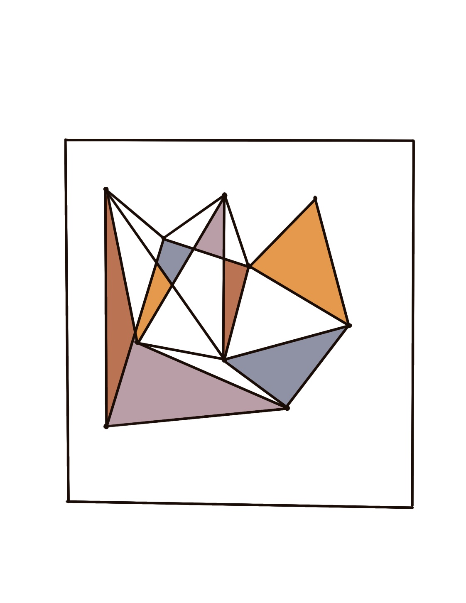
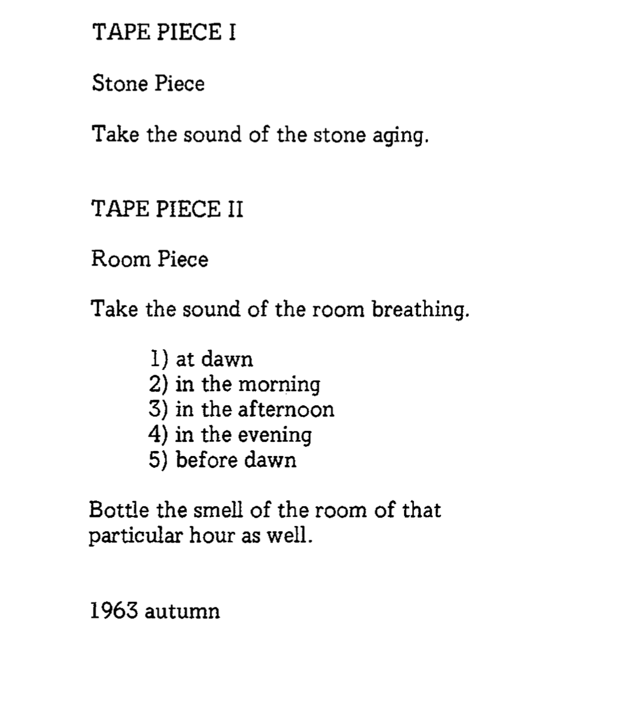

1. Use a pen and a sheet of 8.5in X 11in of paper [or the back of this sheet].
2. Draw ten straight lines from the top left knife right down, distributed over the area of the paper.
3. Draw ten straight lines from the top right to the bottom left of the knife, distributed over the area of the
paper.
4. Use blue, yellow, and red to draw six quadrilateral blocks.
5. Trace the squares with black edges.
6. Draw three circles.
7. Connect the circles with lines.

1. Use a pen and a sheet of 8.5in X 11in of paper [or the back of this sheet].
2. Drew 3 circles in different size.
3. Create as much as the circles inside your original 3 circles.
4. Lined the 3 original circles in straight lines.
5. Draw 12 dots.

1. Use a pen and a sheet of 8.5in X 11in of paper [or the back of this sheet].
2. Draw a middle size square.
3. And fill 10 dots in the square.
4. In the square, connect dots with straight lines.
5. Fill out some colour.


This is Yoko Ono's instruction
As an example.